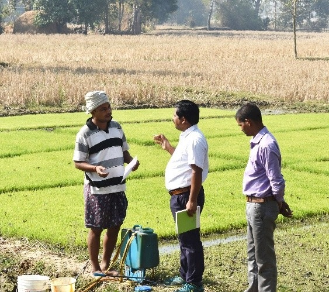
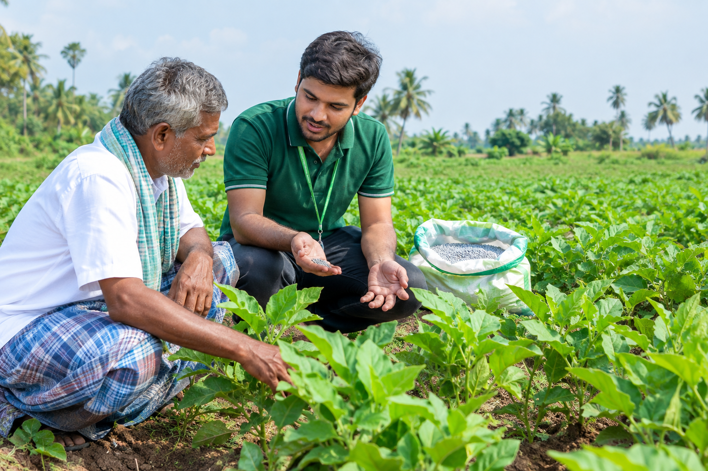
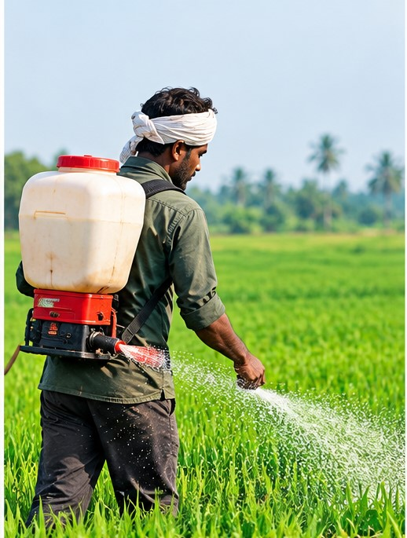
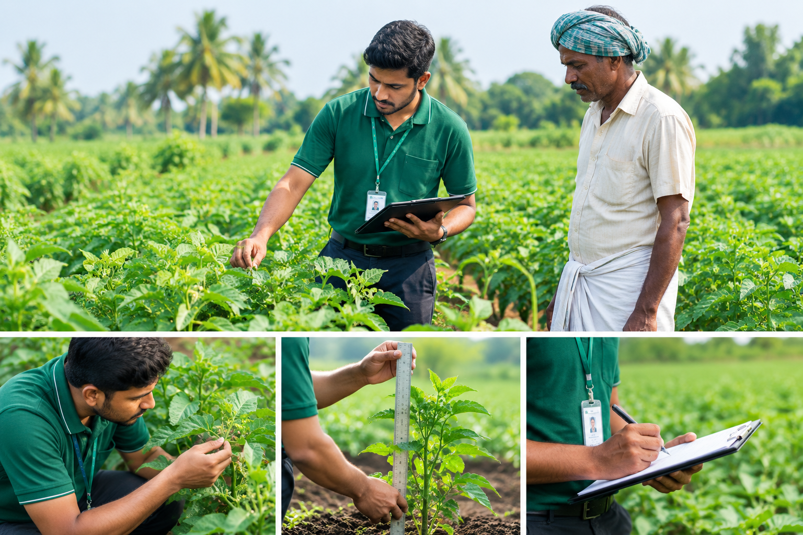

விவசாய நிலத்திற்கு நேரடியாக வந்து பயிரின் தற்போதைய வளர்ச்சி நிலையை முழுமையாக ஆய்வு செய்து தேவையான தொழில்நுட்ப ஆலோசனைகளை வழங்குகிறோம். பயிரின் வேர் வளர்ச்சி, தண்டு வளர்ச்சி, இலை ஆரோக்கியம், பூ மற்றும் காய் பிடிப்பு ஆகியவற்றை பரிசோதிக்கிறோம். மண் வளம், நீர் மேலாண்மை, சத்து குறைபாடு, பூச்சி மற்றும் நோய் தாக்குதல் போன்ற பிரச்சினைகளை கண்டறிந்து, பயிரின் தேவைக்கு ஏற்ப இயற்கை உரங்கள் மற்றும் பராமரிப்பு முறைகளை பரிந்துரைக்கிறோம். அதிக மகசூல் மற்றும் தரமான விளைச்சல் பெற தேவையான வழிகாட்டுதல்களை களத்தில் நேரடியாக வழங்குகிறோம்.

பயிர்களுக்கு இயற்கை உரங்களை சரியான முறையில் பயன்படுத்துவது குறித்து விவசாயிகளுக்கு நேரடி Demo வழங்குகிறோம். பயிரின் வகை மற்றும் வளர்ச்சி நிலைக்கு ஏற்ப தேவையான உரங்களை தேர்வு செய்வது, சரியான அளவு, கலக்கும் முறை மற்றும் பயன்படுத்தும் நேரம் போன்றவற்றை களத்தில் நேரடியாக செய்து காண்பிக்கிறோம். Royal Gel, Banana Gold, Coconut Energy, Humic Power மற்றும் பிற இயற்கை உரங்களை எவ்வாறு பயன்படுத்த வேண்டும் என்பதையும் விளக்குகிறோம். உரங்களை சரியான முறையில் பயன்படுத்தி பயிரின் வளர்ச்சியை மேம்படுத்துவதற்கான நடைமுறை பயிற்சியை விவசாயிகளுக்கு வழங்குகிறோம்.

விவசாய நிலத்திற்கு நேரடியாக வந்து பயிரின் தேவைக்கு ஏற்ப இயற்கை உரங்களை சரியான அளவு மற்றும் சரியான முறையில் பயன்படுத்தி வழங்கும் சேவையை மேற்கொள்கிறோம். பயிரின் வயது, வளர்ச்சி நிலை, மண் தன்மை மற்றும் ஊட்டச்சத்து தேவையை கருத்தில் கொண்டு பொருத்தமான உரங்களை தேர்வு செய்கிறோம். உரத்தை வேர் பகுதிக்கு எவ்வாறு பயன்படுத்துவது, இலை வழியாக எவ்வாறு வழங்குவது மற்றும் நீருடன் இணைத்து பயன்படுத்துவது போன்ற முறைகளை சரியாக செயல்படுத்துகிறோம். உரம் வீணாகாமல், பயிருக்கு தேவையான ஊட்டச்சத்து சரியான முறையில் கிடைக்க உதவும் வகையில் பயன்பாட்டு முறையை மேற்கொள்கிறோம்.

பயிரின் வளர்ச்சி நிலையை தொடர்ந்து களத்தில் நேரடியாக கண்காணித்து தேவையான தொழில்நுட்ப ஆலோசனைகளை வழங்குகிறோம். பயிரின் உயரம், இலை வளர்ச்சி, தண்டு வளர்ச்சி, வேர் வளர்ச்சி, பூ மற்றும் காய் பிடிப்பு போன்ற முக்கிய வளர்ச்சி நிலைகளை ஆய்வு செய்கிறோம். பயிரின் வளர்ச்சியில் ஏற்படும் மாற்றங்கள் மற்றும் வளர்ச்சி குறைபாடுகளை ஆரம்ப நிலையிலேயே கண்டறிந்து தேவையான பராமரிப்பு முறைகளை பரிந்துரைக்கிறோம். பயிரின் வளர்ச்சி நிலைக்கு ஏற்ப உர பயன்பாடு, நீர் மேலாண்மை மற்றும் இயற்கை பராமரிப்பு முறைகளை விளக்குகிறோம். தொடர்ந்து கண்காணிப்பதன் மூலம் பயிரின் ஆரோக்கியத்தை மேம்படுத்தி, சீரான வளர்ச்சி மற்றும் அதிக மகசூல் பெற தேவையான வழிகாட்டுதல்களை வழங்குகிறோம்.